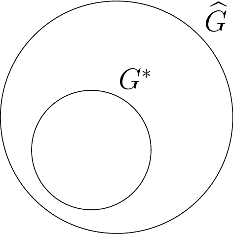
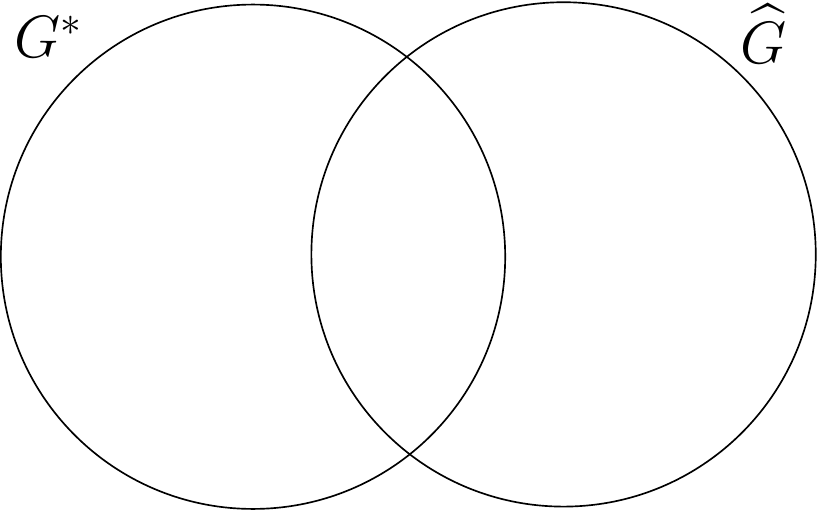

Unsupervised Learning of Graph Structures: Inference and Model Selection for High-Dimensional Stochastic Processes
Área: 1.a. Aprendizagem Estatística e Ciência de Dados Área correlata: 1.c. Estatística Computacional
Magno T. F. Severino
Agenda
Introduction
Theorethical Background
Research Proposal
Viability
Motivation
Modern dependence analysis involves:
high dimensionality,
temporal dependence,
continuous data,
complex structures.
These challenges arise naturally in modern data science problems, including multivariate time series, sensor networks, neurodata, and large-scale systems where statistical models must remain both theoretically sound and computationally scalable.
Probabilistic graphical models (MRFs) are a natural tool for representing such dependencies.
\(X^{(i:j)}\) denote the sequence of vectors \(X^{(i)}, X^{(i+1)}, \ldots, X^{(j)}.\)
\(\bf X = \{X^{(i)}\colon -\infty < i < \infty\}\) satisfies a mixing condition with rate \(\{\psi(\ell)\}_{\ell \in \mathbb R}\) if \[\begin{equation*}
\begin{split}
\Bigl| \mathbb P \bigl(X^{(n:(n+k-1))}=x^{(1:k)}\, |\, X^{(1:m)}=x^{(1:m)}&\bigr) - \mathbb P \bigl( X^{(n:(n+k-1))} =x^{(1:k)}\bigr)\Bigr| \\
&\leq \psi(n-m) \mathbb P\bigl(X^{(n:(n+k-1))}=x^{(1:k)}\bigr),
\end{split}
\end{equation*}\] for \(n\geq m+\ell\) and for each \(k, m \in \mathbb N\) and each \(x^{(1:k)} \in (A^d)^k\), \(x^{(1:m)}\in (A^d)^m\) with \(\mathbb P(X^{(1:m)}=x^{(1:m)})>0.\)
Given a sample of size \(n\) and graph \(G=(V,E)\) and \(v \in V,\) define \[G(v) = \big\{u \in V: (u,v) \in E \big\},\] the set of neighbors of \(v\) in graph \(G.\)
\[
\pi(X_1=x_1) = \frac{N(X_1=x_1)}{n}.
\]
For \(v=X_1,\) we have \(G(v)=\{X_2, X_3\}.\)
Then \[\begin{equation*}
\widehat\pi(a_v|a_{G(v)}) = \frac{\widehat\pi(a_{\{v\}\cup G(v)})}{\widehat\pi(a_{G(v)})}.
\end{equation*}\]
Penalized Pseudo-Likelihood
For a candidate graph \(G\): \[
L(G) \;=\; \prod_{i=1}^n \prod_{v \in V} \pi(x^{(i)}_v | x^{(i)}_{G(v)})\,,
\]
Theorem (Severino & Leonardi, 2025, Stochastic Processes and their Applications):
Let \(\{X^{(i)}: i \in \mathbb{N}\}\) be a stationary process that satisfies the mixing condition presented before with rate \(\psi(\ell) = O(1/\ell^{1+\epsilon})\) for some \(\epsilon>0.\)
Then, by taking \(\lambda_n = c \log n,\) for \(c>0,\) we have that \[\begin{equation*}
\widehat G = \underset{G}{\arg\max}\Big\{\log \widehat L(G) - \lambda_n \sum_{v \in V} |A|^{|G(v)|}\Big\}
\end{equation*}\] satisfies \(\widehat G=G^*\) eventually almost surely as \(n\to \infty.\)
Recent Work
📄
Model selection for Markov random fields on graphs under a mixing condition Stochastic Processes and their Applications, 2025. Severino, M. T. F., & Leonardi, F.
Advances:
global criterion based on penalized pseudo-likelihood;
consistency theorem under a mixing condition;
applications to discrete multivariate processes.
Limitations:
restriction to the finite vertex case,
discrete variables.
This project aims to overcome both limitations in two proposals.
Proposal 1
Model Selection for MRFs with Countably Infinite Vertex Sets under Mixing Condition
Motivation
Massive networks (social, biological, IoT),
Structures where \(|V| = \infty\) and grows with the sample,
Finite-vertex methods do not generalize automatically.
Existing methods
Leonardi et al. (2023): Penalized pseudo-likelihood for discrete MRFs. Graph estimated based on local neighborhood estimation.
Severino & Leonardi (2025): Developed theoretical results for global estimation of discrete MRFs over finite graphs.
Model Selection for MRFs with Countably Infinite Vertex Sets under Mixing Condition
Research goal
Generalize the results from finite to countably infinite graphs.
Improve global estimation, possibly reducing errors from local neighborhood estimation.
Proposed estimation framework
Let \(V\) be infinite and \({V_n}, {n \in \mathbb{N}}\) be a sequence of finite subsets of \(V\).
Assume \(V_n \uparrow V\) as \(n \to \infty\).
Sample: \(\{\mathbf{X} = \{X_v: v \in V_n\}\}\), assuming that \({\mathrm{ne}(v)}\) is finite.
Adaptation of key theorems to handle countably infinite vertex sets.
Proposal 1 – Expected Advances
Algorithms
implementation in R or Python,
simulations on large synthetic networks.
Applications
social networks,
neuroscience (large neural connectivity),
sensor systems.
Proposal 2
Model Selection for Continuous MRFs under Mixing
Current limitations
classical pseudo-likelihood is defined for finite alphabets,
discretization leads to information loss.
Objective
develop a consistent estimator without discretization.
Challenges
replacing summations with integrals,
defining neighborhood structure in conditional densities,
adapting consistency proofs to the continuous setting.
Proposal 2 – Impact
Benefits
higher inferential precision,
no discretization required,
applicability to finance, hydrology, neuroscience, and bioinformatics.
Expected results
consistency theorems analogous to the discrete case,
consistent algorithms for genuinely large-scale systems,
general framework for complex real-world data.
Viability
Viability
Resources:
consolidated background in MRFs, mixing processes, and asymptotic theory,
access to computational infrastructure at IME-USP (low budget project),
a collaborative research environment (Neuromat, UFRJ, UFRN, UBA).
Expected output:
two international journal articles,
two R or Python packages,
presentations at scientific conferences.
Timeline
References
Severino, M. T. F., & Leonardi, F. (2025). Model selection for Markov random fields on graphs under a mixing condition. Stochastic Processes and their Applications.
Leonardi, F., Lopez-Rosenfeld, M., Rodriguez, D., Severino, M. T. F. S., & Sued, M. (2021). Independent block identification in multivariate time series. Journal of Time Series Analysis.
Leonardi, F., Carvalho, R., & Frondana, I. (2023). Structure recovery for partially observed discrete Markov random fields on graphs under not necessarily positive distributions. Scandinavian Journal of Statistics.
Lauritzen, S. L. (1996). Graphical models. Claredon Press.
Oodaira, H., & Yoshihara, K. I. (1971). The law of the iterated logarithm for stationary processes satisfying mixing conditions. Kodai Mathematical Seminar Reports.
Obrigado
Rate of convergence of the empirical probabilities
Based on the Law of the Iterated Logarithm for stationary polynomial mixing processes proved in Oodaira and Yoshihara (1971), we can derive the rate of convergence of the empirical probabilities to the true probabilities of the process.
Proposition 1 (Typicality): Assume the process \(\{X^{(i)}\colon i \in \mathbb{Z}\}\) satisfies the mixing condition with rate \(\psi(\ell) = O(1/\ell^{1+\epsilon}),\) for some \(\epsilon>0.\) Then, for any \(W \subset V\) and \(\delta > 0,\)\[\begin{equation*}
\Big\vert \widehat{\pi}(a_W) - \pi(a_W) \Big\vert < \sqrt{\frac{\delta\log n}{n}},
\end{equation*}\] eventually almost surely as \(n \rightarrow \infty.\)
Proposition 2 (Conditional typicality): Then for any \(\delta > 0\), any disjoint sets \(W, W' \subset V\) and any \(a_W \in A^{W}\) and \(a_{W'} \in A^{{W'}}\) we have that \[\begin{equation*}
\Big\vert \widehat\pi(a_W|a_{W'}) - \pi(a_W|a_{W'}) \Big\vert < \sqrt{\frac{\delta\log n}{N(a_W)}},
\end{equation*}\] eventually almost surely as \(n \rightarrow \infty.\)
Intuitive Ove
rview of Theorem Proof {.smaller visibility=“uncounted”}
Consider \(\{\widehat G\neq G^*\} = \big\{G^* \subsetneq \widehat G \big\} \cup \big\{G^* \not\subset \widehat G \big\}.\)


We prove that, eventually almost surely as \(n\to\infty,\) neither of the cases above can happen, which implies that \(\widehat G = G^*.\)